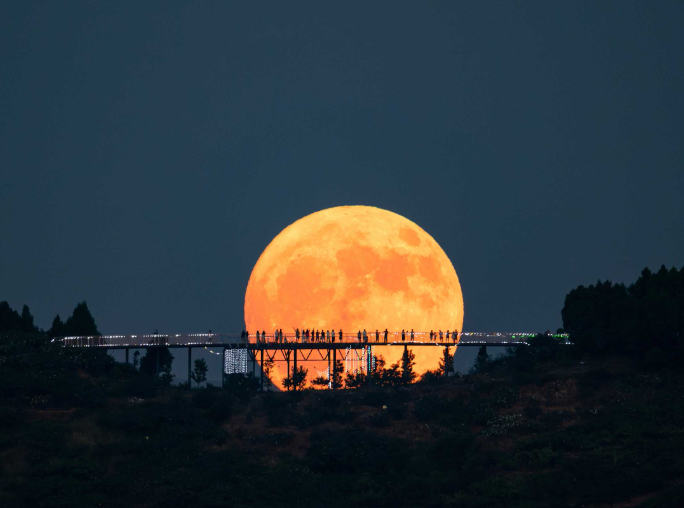
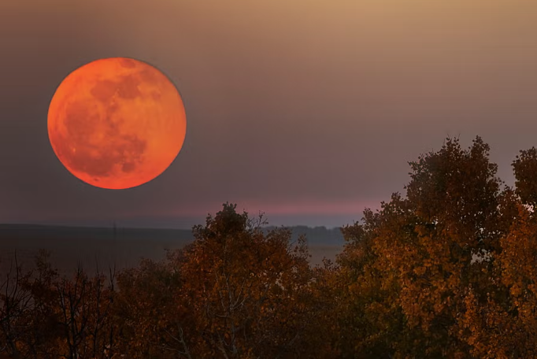
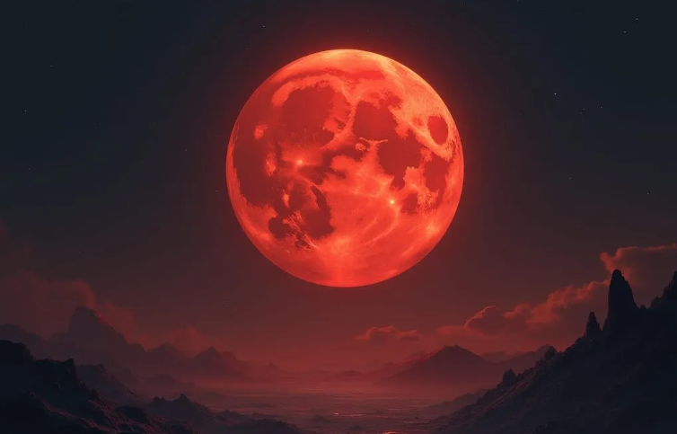
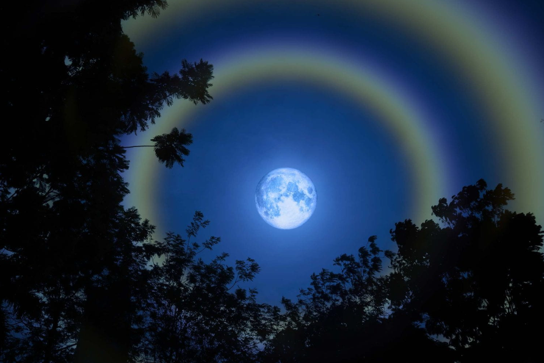

Moons
1. Supermoon

Supermoons can be up to 14% larger and 30% brighter than a regular full moon. This phenomena happens when a full moon coincides with being perigee, the point in the moon's orbit closest to Earth. Supermoons can affect tides, causing higher-than-usual high tides and lower-than-usual low tides. Some believe they can cause heightened emotions as well. They typically make appearences between three to four times each year.
2. Harvest Moon

The "Harvest Moon" is the full moon nearest to the autumnal equinox, when the angle of the moon's orbit relative to the Earth's horizon is at its minimum, causing the full moon to rise above the horizon much faster than usual. The Moon's light was particularly important during fall, when harvests are the largest. Harvest workers in the Northern Hemisphere may be aided by bright moonlight after sunset on several successive evenings.
3. Bloodmoon

The Bloodmoon or Lunar Eclipse occures when the light that reaches the Moon's surface is from the edges of the Earth's atmosphere. The air molecules from Earth's atmosphere scatter out most of the blue light, leaving behind reflects that then reflects of the moon's surface with a red glow. This phenomenon is known as Rayleigh scattering, the same phenomenon that causes sunsets to appear red. Blood moons can only occur during a full moon. They typically occur two times per year
4. Moonbow

Moonbows are much fainter than regular rainbows due to the lower light intensity often appearing white the naked eye. To witness this phenomenon, the dark skies must not be obscured by clouds during a full moon. Furthermore, the Moon must be low near waterfalls or during light rain showers. The frequency of a moonboow is hard to predict due to the conditions that must be met for it to happen.